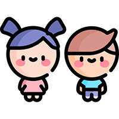

Natación
Mejora tu cuerpo con la Natación
¿Que es?
La natación es un deporte que consiste en el desplazamiento de una persona en el agua, sin que esta toque el suelo. Es regulado por la Federación Internacional de Natación. El origen de la natación es ancestral y se tiene prueba de ello gracias a los estudios sobre las más antiguas civilizaciones. Comenzó como la mayoría de las actividades deportivas: por la necesidad de sobrevivir y de buscar alimento bajo el agua. Los primeros indicios del nado son del año 4.500 a.
Beneficios
Potencia la salud mental
El oxígeno que utilizas para nadar activa tu cerebro y libera toxinas. Es más, al concentrarte en la respiración, tu cuerpo se relaja y se reduce la sensación de estrés. Esa inyección de endorfinas, la hormona del placer, también reduce tus niveles de ansiedad y mejora el estado de ánimo. En definitiva, aumenta tu sensación de bienestar.

Es un ejercicio completo
Nadar utiliza dos tercios de los músculos del cuerpo, potenciando la fuerza y la resistencia. Además, desgasta menos las articulaciones que otras prácticas deportivas, porque el cuerpo, al estar flotando, no recibe el impacto de superficies duras.

Mejora el aparato respiratorio y cardiovascular
Al nadar, consumes hasta un 10% más de oxígeno y tu corazón impulsa la sangre hasta un 18% más. Esto significa gozar de una mejor circulación sanguínea

Clave para el desarrollo de los niños
Es importante iniciar a los niños temprano en el mundo de la natación para que pierdan el miedo al agua y estén más seguros. Con este conocimiento, sabrán desenvolverse y no tendrán problemas en dos lugares muy frecuentados en nuestro país: el mar y la piscina.
Actividades
El ideal nadar tres veces a la semana
Nadar tres días por semana es saludable y eficiente. El nivel de intensidad de este ejercicio hace que sea necesario tener un día de descanso entre las sesiones. De esta forma, trabajamos intensamente la parte superior del cuerpo y también las piernas.
¿Cuánto tiempo nadar por sesión?
El tiempo regular de entrenamiento dentro de la piscina es de 40 o 45 minutos, aproximadamente. Esto definiría el máximo y el estándar que se maneja en las clases especializadas. En el caso de los niños, podríabajar el tiempo a unos 30 minutos.